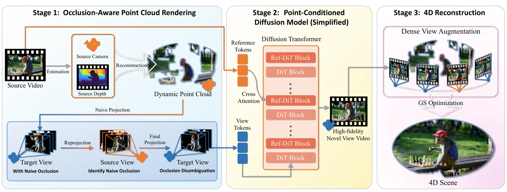
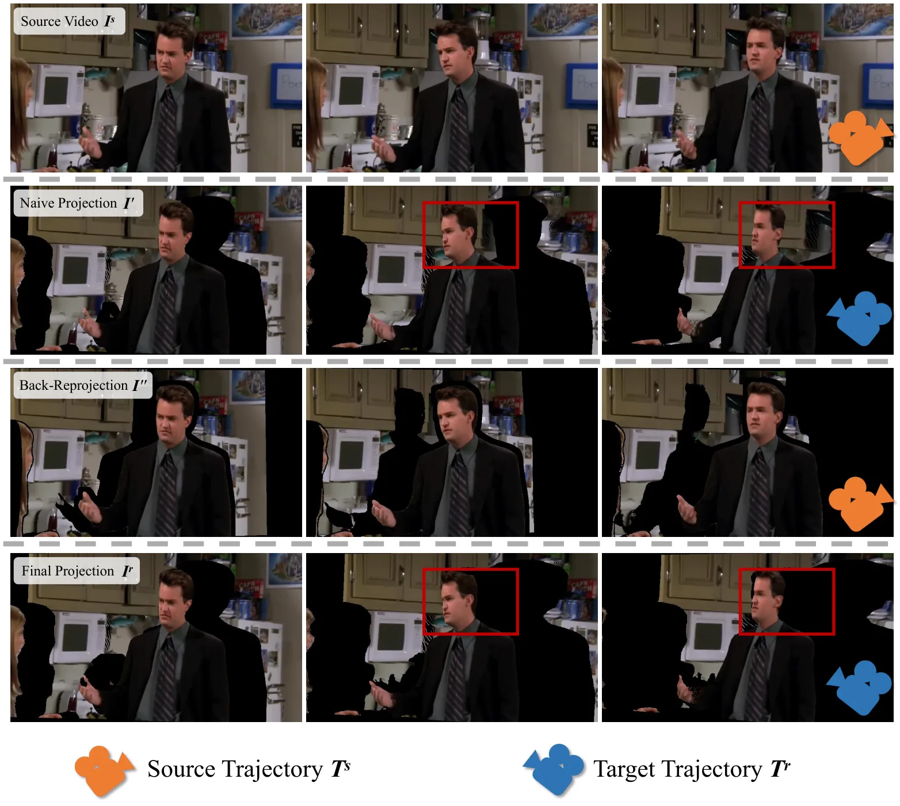
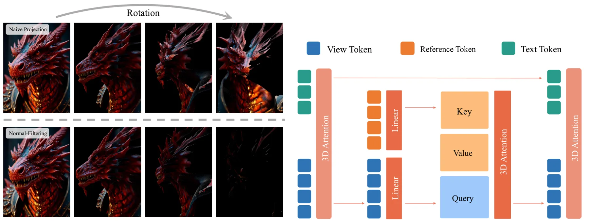

UniWorld-View：基于视频扩散模型的大基线视图合成UniWorld-View: Large-Baseline View Synthesis via Video Diffusion Models
直面稀疏覆盖和大基线重建难题，且有下游 3DGS 接口；生成式补全可能引入不可观测几何，需看严格几何指标。
一句话工作总结
用遮挡感知点云渲染约束视频扩散，在稀疏单目输入下生成大基线多视图，并服务动态 3DGS。
摘要
UniWorld-View 从稀疏单目输入生成可控的大基线新视图，将显式三维引导与视频扩散模型结合。其遮挡感知点云渲染策略处理可见性歧义，为扩散生成提供相机可控的几何先验，在极端相机运动和宽基线变化下保持视觉质量与几何一致性。生成的多视图视频还可作为动态 3DGS 重建输入；WorldScore 和 zero-shot NVS benchmark 展示了其控制性和生成质量。
The abundance of casually captured monocular videos and images on social media provides a valuable source for immersive content creation, where generating novel views from such sparse observations can greatly enhance user experiences. However, producing photorealistic and geometrically consistent views with precise camera control remains challenging when input coverage is extremely limited. Reconstruction-based approaches such as NeRF and 3D Gaussian Splatting (3DGS) deteriorate severely under sparse inputs and fail to explicitly handle occlusions. Generative methods ease data requirements but still struggle with large-baseline view synthesis due to inaccurate or implicit geometric guidance. To overcome these limitations, we introduce UniWorld-View, a unified framework for controllable large-baseline novel view synthesis from monocular inputs. UniWorld-View integrates explicit 3D guidance with generative diffusion modeling to enable precise camera control and geometrically consistent view generation. The geometric guidance is obtained through an occlusion-aware point cloud rendering strategy that resolves visibility ambiguities and provides accurate priors for diffusion-based synthesis. By coupling this rendering strategy with powerful video diffusion backbones, UniWorld-View achieves high-fidelity novel view generation even under extreme camera motions and wide-baseline changes, and can further provide multi-view videos for downstream dynamic 3DGS reconstruction. Experiments on the WorldScore benchmark and zero-shot NVS benchmarks demonstrate the effectiveness of UniWorld-View in controllability, geometric consistency, and visual fidelity.
中文解读摘录
- 原题：Swimm3R: Splatting with Medium-aware SfM for Underwater 3D Reconstruction
- 作者：Minseong Kweon, Junaed Sattar
- 推荐评分：9.2/10
- 核心方法：把空气中几何先验蒸馏到前馈骨干，并用物理 head 联合回归水下成像参数、相机位姿和恢复点云；随后用带 Beta primitives 与散射感知几何梯度的 Underwater Beta Splatting 表示场景。
- 为何值得看：它不是单纯先增强图像再做 SfM，而是把散射、衰减、位姿和几何放进统一框架。论文报告相对 WaterSplatting 平均 PSNR 提升 1.47 dB，RRA@15/RTA@15 分别提高 2.0/2.4 个百分点；需进一步检查 Barbados 数据集规模、跨水体泛化和绝对尺度。
图表/页面预览

{kind=link}

{kind=link}

{kind=link}
